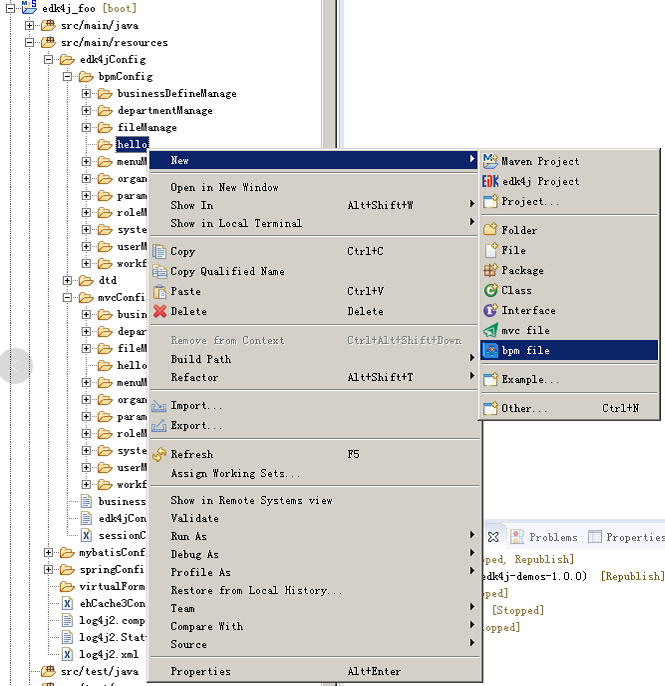
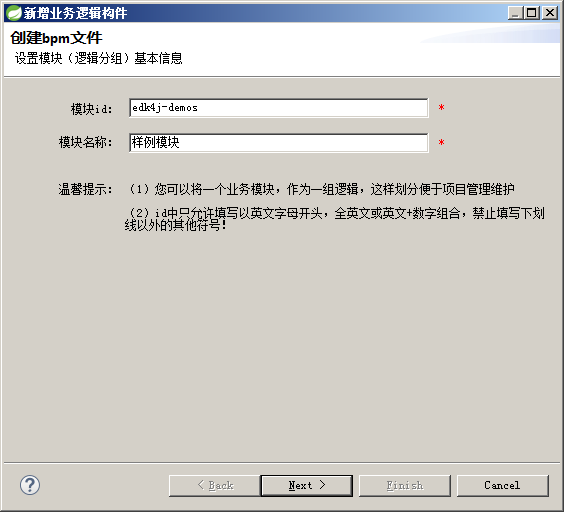
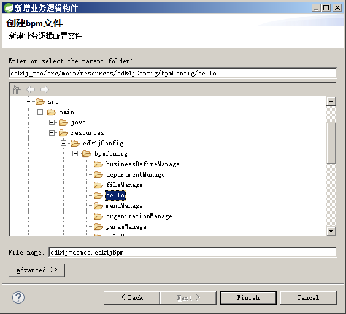
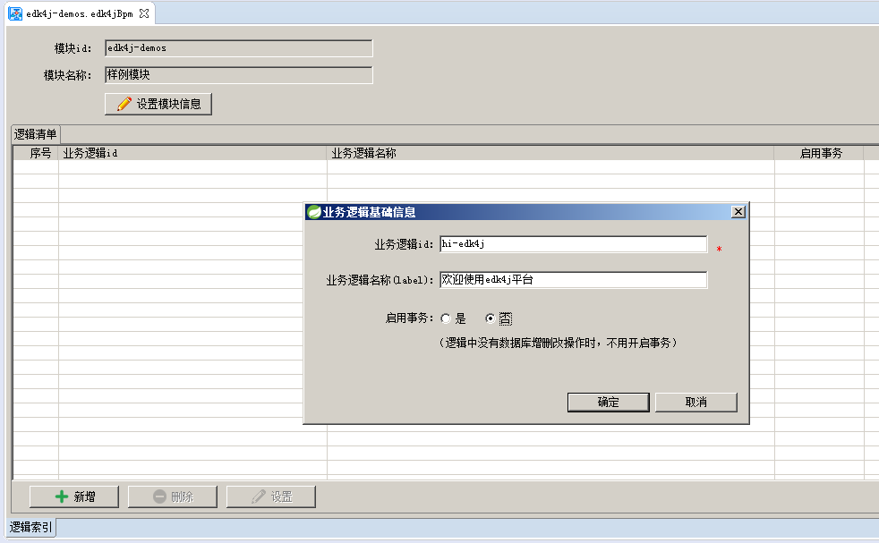
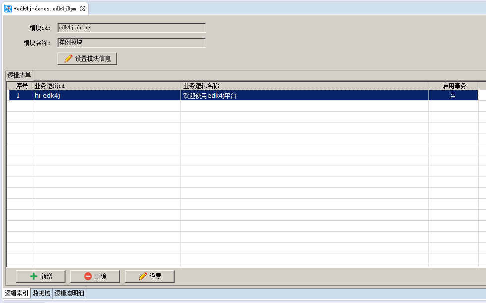
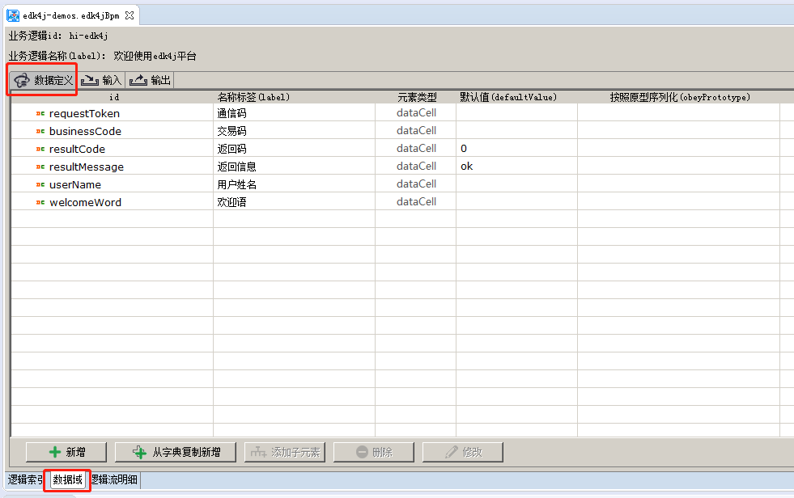
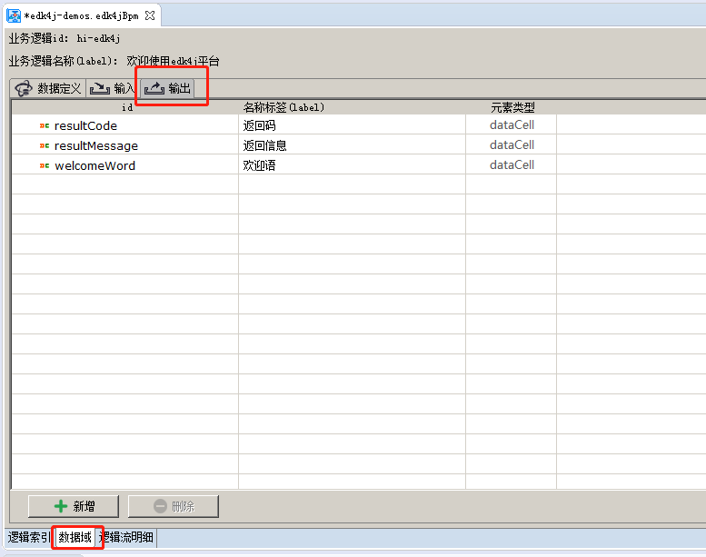
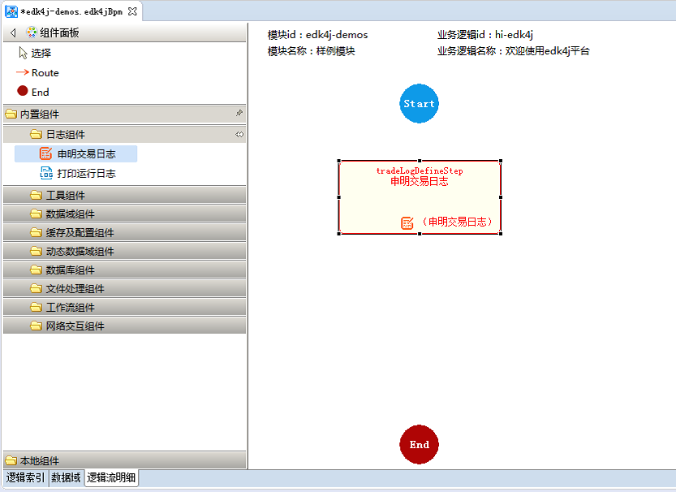
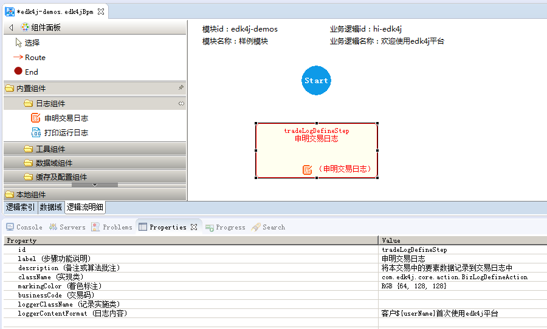

在项目的src/main/resources/edk4jConfig/bpmConfig文件夹下建立一个业务模块文件夹，然后如图所示“右键”新建bpm文件：

按照下面的导航截图，创建bpm文件：



按照下面的步骤图进行操作，创建一个业务逻辑



点击“数据域”页，可以编辑该业务逻辑的"context、input、output"



在“逻辑流明细”编辑页，从左侧“组件面板”列表中，点击需要的组件后，鼠标挪动到流程图画板中再点击，便完成向流程中新组件

双击流程图中具体的组件，下方的“propeties”视图页激活，在其中编辑该组件的属性

点击route，然后在画板中为两个action之间创建连线，将组件连接起来，完成可执行的逻辑流，并调整组件位置美化流程图，完成一个业务逻辑的开发